Chapter 5 Patterns
This chapter is a practical guide to a plethora of data visualizations; it explores different types of visualizations and tools and provides helpful tips for using them effectively.
5.1 Outlier Detection
(Arribas-Gil and Romo 2014)
We can use data visualization for outlier detection in a data set. Different methods for outlier detection in functional data have been developed over the years. Several of these methods rely on different notions of functional depth, robust principal components, or random projections of infinite-dimensional data into R. Some distributional approaches have also been considered (Gervini 2012). In functional data analysis, we observe curves defined over a given real interval and shape outliers may be defined as those curves that exhibit a different shape from the rest of the sample. Other types of outliers include:
| Outlier | Description |
|---|---|
| Global Outliers (or “point anomalies”) | A data point is considered a global outlier if its value is far outside the entirety of the data set in which it is found. |
| Contextual (Conditional) Outliers | A data point is considered a contextual outlier if its value significantly deviates from the rest of the data points in the same context. Note that this means that the same value may not be considered an outlier if it occurred in a different context. If we limit our discussion to time series data, the “context” is almost always temporal, because time series data are records of a specific quantity over time. Contextual outliers are common in time series data. |
| Collective outliers | A subset of data points within a data set is considered anomalous if those values as a collection deviate significantly from the entire data set, but the values of the individual data points are not themselves anomalous in either a contextual or global sense. In time series data, one way this can manifest is as normal peaks and valleys occurring outside of a time frame when that seasonal sequence is normal or as a combination of time series data that is in an outlier as a group. |
Below is a simple example. Outlier treatment is important because it can drastically bias/change the fit estimates and predictions.
# Inject outliers into data.
cars1 <- cars[1:30, ] # original data
cars_outliers <- data.frame(speed=c(19,19,20,20,20), dist=c(190, 186, 210, 220, 218)) # introduce outliers.
cars2 <- rbind(cars1, cars_outliers) # data with outliers.
# Plot of data with outliers.
par(mfrow=c(1, 2))
plot(cars2$speed, cars2$dist, xlim=c(0, 28), ylim=c(0, 230), main="With Outliers", xlab="speed", ylab="dist", pch="*", col="red", cex=2)
# Plot of original data without outliers. Note the change in slope (angle) of best fit line.
plot(cars1$speed, cars1$dist, xlim=c(0, 28), ylim=c(0, 230), main="Outliers removed \n A much better fit!", xlab="speed", ylab="dist", pch="*", col="red", cex=2)
Detection of Outliers is performed using:
- Univariate Approach
- Multivariate Approach
- Multivariate Model Approach
5.2 Tips to Improve Data Visualization
(French 2017), (Steier et al. 2012), (Evergreen, Stephanie;Metzner, Chris 2013)
5.2.1 Comparison
Include a zero baseline if possible. Although a line chart does not have to start at a zero baseline, it should be included if it gives more context for comparison. If relatively small fluctuations in data are meaningful (e.g., in stock market data), you may truncate the scale to showcase these variances. Always choose the most efficient visualization. Watch your placement - You may have two nice stacked bar charts that are meant to let your reader compare points, but if they’re placed too far apart to “get” the comparison, you’ve already lost. Tell the whole story. Maybe you had a 30% sales increase in Q4. Exciting! But what’s more exciting? Showing that you’ve actually had a 100% sales increase since Q1.
5.2.2 Copy
Don’t over explain if the copy already mentions a fact. The subhead, callout, and chart header don’t have to reiterate it. Keep the chart and graph headers simple and to the point. There’s no need to get clever, verbose, or puntastic. Keep any descriptive text above the chart brief and directly related to the chart underneath. Remember: Focus on the quickest path to comprehension. Use callouts wisely. Callouts are not there to fill space. They should be used intentionally to highlight relevant information or provide additional context. Don’t use distracting fonts or elements. Sometimes you do need to emphasize a point. If so, only use bold or italic text to emphasize a point — and don’t use them both at the same time.
5.2.3 Color
Use a single color to represent the same type of data. Watch out for positive and negative numbers. Don’t use red for positive numbers or green for negative numbers. Those color associations are so strong it will automatically flip the meaning in the viewer’s mind. Make sure there is sufficient contrast between colors. Avoid patterns. Stripes and polka dots sound fun, but they can be incredibly distracting. If you are trying to differentiate, say, on a map, use different saturation of the same color. On that note, only use solid-colored lines (not dashes). Select colors appropriately. Don’t use more than 6 colors in a single layout.
- Tips for Color in Visuals
| Use Case | Tip | Rationale |
|---|---|---|
| Numerical Scales | Color for numerical scales should be used with caution. | The way you interpret a shade depends on the colors around it and sometimes it can lead to false conclusions. |
| Color Associations | Color can be used to leverage long-term memory very quickly. | We automatically associated strawberries with red. If we can leverage the how people associate different colors with different things, we will not even need a legend to explicitly match color to meaning. |
| Highlights | Bright colors can be used to highlight a certain part of the data. | Alarming colors draw the eye quickly to areas that need attention. |
| Color Combinations | Use contrasting dark and light colors. Combinations such as red–green or blue– yellow should be avoided. | This will cause difficulty for people with color blindness. |
(Jager 2019)
Choice of Colors | Match the content of a color with the meaning in readers’ culture. | This helps readers understand the graphs quicker and easier. For example, green for forest and blue for lake, and red for Repulicans and blue for Democrats. But do avoid stereotypical colors, such as pink for women and blue for men. |
Number of Colors | Do not use more than 6 colors in a single layout. | Too many colors do not help readers distinguish categories easily, instead, readers will be confused. If more than six colors are needed, we should consider using another type of chart or categorize groups together (Rost, 2018). |

5.2.4 Ordering
Order data intuitively. There should be a logical hierarchy. Order categories alphabetically, sequentially, or by value. Order consistently. Order evenly. Use natural increments on your axes (0, 5, 10, 15, 20) instead of awkward or uneven increments (0, 3, 5, 16, 50).
5.2.5 Audience Perspective
Let the users lead. Know your audience. Designers should consider the way users prefer to understand the information, even in choosing basic analytic approaches. For users to feel comfortable adopting and sharing insights from analytics, they must be able to explain and defend the data.
The following two graphs illustrate how the audience could dictates the elements of visualizations: title, name of x-axis and y-axis, chart type, legend, etc. Both graphs are based on the exact same data but for two distinct audience groups.
 This graph is drawn from a scientific journal. The audience of the graph above is scientists or researchers because scientific notations are used and some basic statistical background is required to understand this graph. For the density plot, the mean and left and right extremes are not shown but assumed.
This graph is drawn from a scientific journal. The audience of the graph above is scientists or researchers because scientific notations are used and some basic statistical background is required to understand this graph. For the density plot, the mean and left and right extremes are not shown but assumed.

image
The graph above is from the New York Times. The audience is the general public. This graph is not as truthful as the one before but easier to understand and more persuasive as people associate red with heat and blue with cold. The underlying idea is clear that the globe is becoming warmer.
Always remember to tailor the visualizations to the audience and make sure the intended message to be delivered in a clear and understandable fashion.
5.2.6 Use Layers to Tell a Story
While style is one form of customization, layering unique data sets on a single visualization can tell a richer narrative and connect users to the data without getting too crowded.
According to Lupi (2015),
To achieve this multi-layered storytelling with data even when visualizations are static and printed, everything depends on the concept of layering, establishing hierarchies and making them clear.
On a map, this can be as simple as zooming in and out, but it can also involve drill-downs (choosing a data point and expanding it to show more detail), links and other shortcuts.
Here is a example how a multi-layered visualization is created:
 Even some previous mentioned visualizations, including John Snow’s epidemic map and Minard’s Napoleon’s 1812 March both utilizes layering technique to add depth to the visualizations.
Even some previous mentioned visualizations, including John Snow’s epidemic map and Minard’s Napoleon’s 1812 March both utilizes layering technique to add depth to the visualizations.
{kind=link}
{kind=link}
5.2.7 Keep It Simple
Analytic results shouldn’t be presented to 10 decimal places when the user doesn’t need that level of precision to make a decision or understand a concept. Effective visual interfaces avoid 3-D effects or ornate gauge designs (a.k.a. “chart junk”) when simple numbers, maps or graphs will suffice.
5.2.8 Graph Integrity
“Graphics were used as instruments for reasoning quantitative information. With this example, graphical work has come to flourish. Graphical excellence begins with telling the truth about the data (Tufte,2001)”.
In Tufte’s “The Visual Display of Quantitative Information” book, an entire chapter is dedicated to graphical integrity in visualizations. Very useful and important examples can be found in the book. Following are some examples:


5.3 Charts
5.3.1 What makes a chart effective?
Data visualization is a combination of art and science. When it comes to the artistic aspect, there are no correct answers for doing the visualization. There are many ways to present the data. However, when making sense of facts, numbers, and measurements, a better understanding and effectiveness is promoted by a logical path to follow. To determine the best type of chart is hard for those new to data visualization. Most people learn it by referring to other people’s work without understanding the underlying logic, so they don’t have the theory in their mind to make the judgment.
Therefore, before we begin visualizing our data, we need to start with the following:
- Know the purpose[@ chart_purpose] - (Analytical or Presentation)(Ref-https://research.tableau.com/sites/default/files/Kosara-C4PGV-2016.pdf): It is important to know the purpose of designing a visualization. In many cases, it is designed to explore or analyze data to enable readers to find insights in data themselves. But there are also cases when its purpose is to present and create awareness about certain findings or even to make a decision. For example, when a journalist creates a visualization for reporting on the current weather situation, the goal there is to mainly present the key trends and create awareness among the general public. When climate scientists create visualizations for communicating their results to policy makers on climate change, they are mainly calling for actions.
- Know your audience[@ chart_audience]: After we know the why we are designing a visualization, it is important to know who are we targeting with that visual. No matter who your intended audience is, it is important to customize it to their needs, interest, level of expertise and analytical ability. Certain factors like their cultural preferences, expertise level, etc., also play a key role in designing an effective visualization. For eg., colors have a special significance in Chinese culture. They use red to represent a dynamic or/and a positive event, such as growing sales in a region, while in most of the western world blue or green represents positive trends, such as sales revenue, etc. Similarly, a visualization designed for a finance analyst will be different from a visual designed for a marketing manager. Therefore, customization is key in ensuring effectiveness of a visualization.
- Know the right chart type[@ chart_audience]: Once you know the purpose and have identified the target audience, it is important to choose the right chart type. Choosing the right visual, which could be a chart, map, table, dashboard or infographic, ensures that it resonates well with your audience. Also, it empowers the readers to explore the data, identify insights and make decisions after evaluating different scenarios.
After answering these questions, you should be able to get a better image of your ideal graph. The simple guidance for using the different types of the chart is - line charts for tracking trends over time, bar charts to compare quantities, scatter plots for a joint variation of two data items, bubble charts showing the joint variation of three data items, and pie charts to compare parts of a whole. However, let’s delve deeper into the various presentation styles and types of common charts.
5.3.2 How to decide which chart type to use?
While it is possible that data can be visualized using multiple charts, however, it is important to choose the ‘right’ chart type that clearly and accurately communicates the key message by separating the noise from the data. Remember, data is only valuable if you know how to visualize it and give context. (Infogram, n.d.)
There are four basic presentation types that you can use to present your data:
- A Comparison chart sets two variables against each other and displays the interaction between those two variables. For eg., a line chart displaying the variation of online sales across different months during a given time period.
- A Composition chart displays how individual parts make up the whole of something. For eg., a pie chart displaying the market share of a phone company by region.
- A Distribution chart helps to understand outliers, the normal tendency, and the range of values in the dataset. For eg., a column histogram displaying the distribution of grades on a school exam.
- A Relationship chart tries to show a connection or correlation between two or more variables. For eg., a scatter plot displaying the relationship between marketing spends and sales revenue.
To determine which chart is best suited for each of those presentation types, first you must answer a few questions(Jānis Gulbis 2016a):
- How many variables do you want to show in a single chart? One, two, three, many?
- How many items (data points) will you display for each variable? Only a few or many?
- Will you display values over a period of time, or among items or groups?
After you have answers to these questions, you can refer to a chart selection diagram created by Dr. Andrew Abela that should help you pick the right chart for your data type.
Let’s move further and review the most commonly used chart types, some example, and the dos and don’ts for each chart type.
5.4 Chart Types
In general, there are two basic types of data visualisation: exploration, which helps find a story the data is telling you, and explanation, which tells a story to an audience. Both types of data visualisation must take into account the audience’s expectations.
Within these two basic categories, there are many different ways data can be made visual. In this article, we’ll go through some of most common types of data visualisation that fall under the temporal, multidimensional, hierarchical, network and geospatial categories. (Source: (Datalabs, n.d.))
5.4.1 Temporal Visualizations
(Ayalasomayajula, n.d.)
What are some of the most common data visualizations seen in newspapers, textbooks, and corporate annual reports? Graphs showing a country’s GDP growth trends or charts capturing a company’s sales growth in the last 4 quarters would be high up on the list. Essentially, these are visualizations that track time series data – the performance of an indicator over a period of time – also known as temporal visualizations.
Temporal visualizations are one of the simplest and quickest ways to represent important time series data. There are 6 handy temporal visualization styles for your time series data.
5.4.1.1 Line Graph
A line graph is the simplest way to represent time series data. It is intuitive, easy to create, and helps the viewer get a quick sense of how something has changed over time.
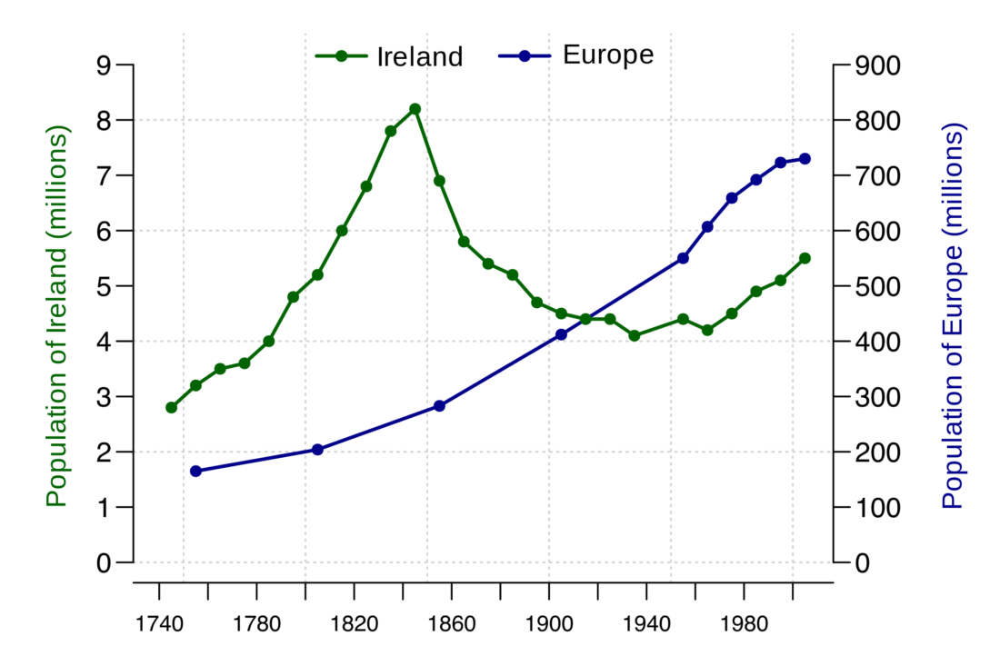
(Source: (Ayalasomayajula, n.d.))
5.4.1.2 Stacked Area Chart
Stacked area charts are area charts similar to a line chart. In an area chart, multiple variables are “stacked” on top of each other, and the area below each line is colored to represent each variable. Stacked area charts are useful to show how both a cumulative total and individual components of that total changed over time. The order in which we stack the variables is crucial because sometimes, there can be a difference in the actual plot versus the human perception.
The figure below is a stacked area chart showing time series data:

(Source: (Ayalasomayajula, n.d.))
5.4.1.3 Bar Charts
Bar charts represent data as horizontal or vertical bars. The length of each bar is proportional to the value of the variable at that point in time. A bar chart is the right choice when you wish to look at how the variable moved over time or when you wish to compare the variable with each other. Grouped or stacked bar charts help you combine both these purposes in one chart while keeping your visualization simple and intuitive. The chart plots the value vertically whereas we perceive the value to be at right angles to the general direction of the chart.
In the figure below, a bar graph would be a cleaner alternative.
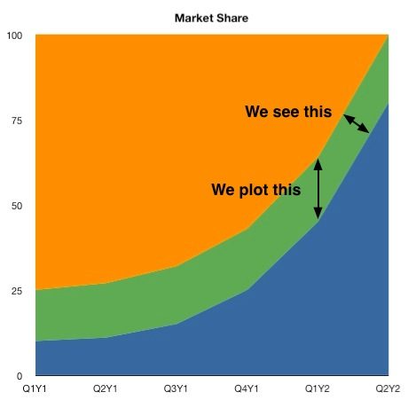
(Source: (Ayalasomayajula, n.d.))
For instance, the grouped bar chart in this interactive visualization of number of deaths by disease type in India not only lets you compare the deaths due to diarrhea, malaria, and acute respiratory disease across time, but also lets you compare the number of deaths by these three diseases in a given year. By switching to the stacked bar chart view, you get an intuitive sense of the proportion of deaths caused by each disease.
We can use two different bar charts to represent time series data.

(Source: (Ayalasomayajula, n.d.))

(Source: (Ayalasomayajula, n.d.))
This should be the most popular chart type. This chart is good to do a comparison between different values when specific values are important.
Still have hard time to choose? There are many resources online which can help you make the decision. For example, Dr. Andre Abela creates a chart selection diagram that is helpful to pick the right chart depending on the data type.
To avoid clutter and confusion, make sure not to use more than 3 variables in a stacked or group bar chart. It is also a good practice to use consistent bold colors and leave appropriate space between two bars in a bar chart.
5.4.1.4 Gantt Chart
Gantt charts are a popular project management tool since they present a concise snapshot of various tasks spread across various phases of the project. A Gantt chart is a horizontal bar chart showing work completed in a certain period of time with respect to the time allocated for that particular task. It is named after the American engineer and management consultant Henry Gantt who extensively used this framework for project management. You can show additional information such as the correlation between individual tasks, resources used in each task, overlapping resources, etc. by the use of colors and placement of bars in a Gantt chart.
The planning of logistics for a dance concert presents a situation in which a Gantt chart is a good option. There are many activities to be completed, some of which will take place simultaneously while some can only be done sequentially. For instance, the choreographers, soundtrack, and dancers need to be finalized before the choreography can begin. However, the costumes, props, and stage decor can be planned at the same time as the choreography. With careful preparation, Gantt charts can help you plan for complex, long-term projects that are likely to undergo several revisions and have various resource and task dependencies.
Gantt charts are a popular project management tool since they present a concise snapshot of various tasks spread across various phases of the project. You can show additional information such as the correlation between individual tasks, resources used in each task, overlapping resources, etc., by the use of colors and placement of bars in a Gantt chart.

5.4.1.5 Stream Graph
A stream graph is essentially a stacked area graph, but displaced around a central horizontal axis. It looks like flowing liquid, hence the name. A stream graph showing a randomly chosen listener’s last.fm music-listening habits over time.

(Source: (Ayalasomayajula, n.d.))
Stream graphs are great to represent and compare time series data for multiple variables. Stream graphs are, thus, apt for large data sets. Remember that choice of colors is very important, especially when there are lots of variables. Variables that do not have significantly high values might tend to get drowned out in the visualization if the colors are not chosen well.
5.4.1.6 Heat Map
Heat maps are perfect for a two-tiered time frame – for instance, 7 days of the week spread across 52 weeks in the year, or 24 hours in a day spread across 30 days of the month, and so on. The limitation, though, is that only one variable can be visualized in a heat map. Comparison between two or more variables is very difficult to represent in a heat map.
Geo-spatial visualizations often use heat maps since they quickly help identify “hot spots” or regions of high concentrations of a given variable. When adapted to temporal visualizations, heat maps can help us explore two levels of time in a 2D array.
This heat map visualizes birthdays of babies born in the United States between 1973 and 1999. The vertical axis represents the 31 days in a month while the horizontal axis represents the 12 months in a year. This chart quickly helps us identify that a large number of babies were born in the latter half of July, August, and September.

(Source: (Ayalasomayajula, n.d.))
5.4.1.7 Polar Area Diagram
Think beyond the straight line! Sometimes, time series data can be cyclical – a season in a year, time of the day, and so on. Polar area diagrams help represent the cyclical nature time series data cleanly. A polar diagram looks like a traditional pie chart, but the sectors differ from each other not by the size of their angles but by how far they extend out from the center of the circle.
Polar area diagrams are useful for representing seasonal or cyclical time series data, such as climate or seasonal crop data. Multiple variables can be neatly stacked in the various sectors of the pie.
It is crucial to clarify whether the variable is proportional to the area or radius of the sector. It is a good practice to have the area of the sectors proportional to the value being represented. In that case, the radius should be proportional to the square root of the value of the variable (since the area of a circle is proportional to the square of the radius).
This popular polar area diagram created by Florence Nightingale shows causes of mortality among British troops in the Crimean War. Each color in the diagram represents a different cause of death. (Check out the text legend for more details.)

(Source: (Ayalasomayajula, n.d.))
5.4.1.8 Time Series Data and Its Deceptive Potential
(“Avoiding Common Mistakes with Time Series” 2015)
This article explains how time series data visualization can sometimes be deceptive.
It first takes an example of two random time series data and plots them on a graph which gives an impression that the two are strongly correlated. But if we do some statistical testing, the two do not show any relationship, this is an example of “correlation does not necessarily mean causation”.
In another set of examples, the author has taken trending two random time series data and shown how even statistical tests can give a wrong interpretation. The article then explains using visualization how a general trended time series can be different than a more controlled and measured trending time series.
5.4.2 Hierarchical Visualizations
Hierarchical data is essentially a specialized form of network data – in that while entities within the dataset do not have dependent relationships; they are all related to each other by the principle of containment. They, unlike standard data networks, do not use the principle of connection.
A hierarchy begins with a root entity. This might be the CEO of a company, the name of a book, the title of a folder, etc. and then the root entity has at least one “child node” and every further child node has zero or more children.
Hierarchical data is shown in tree graphs; so called because of their similarity to a tree’s structure (though a tree which has been turned upside down so that the root is at the top and the branches form below it). Some of the common types of hierarchical forms of visualizations are explained below: (Source: (Shneiderman, n.d.))
5.4.2.1 Treemap Diagram
The treemap was invented Ben Shneiderman of the University of Maryland in 1990. It represents hierarchies by using all the available space and in the form of nested rectangles.
The rectangles can be defined in proportion to the “space” that they take up within the data set. These information visualizations can be very useful for comparing nodes and see patterns within them.
The math involved to create a treemap is quite complex but the good news is that you don’t have to do that math; there are plenty of software packages available that can do this for you. (Source: (Shneiderman, n.d.))
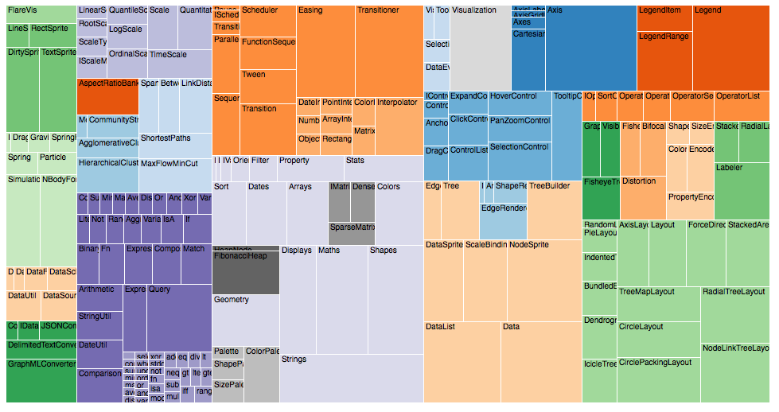
(Source: (“Data Visualization: Visualization Types,” n.d.))
5.4.2.2 Sunburst Diagram
As known as a Sunburst Chart, Ring Chart, Multi-level Pie Chart, Belt Chart, Radial Treemap.
This type of visualisation shows hierarchy through a series of rings, that are sliced for each category node. Each ring corresponds to a level in the hierarchy, with the central circle representing the root node and the hierarchy moving outwards from it.
Rings are sliced up and divided based on their hierarchical relationship to the parent slice. The angle of each slice is either divided equally under its parent node or can be made proportional to a value.
Colour can be used to highlight hierarchal groupings or specific categories. (Source: (“Sunburst Diagram,” n.d.))
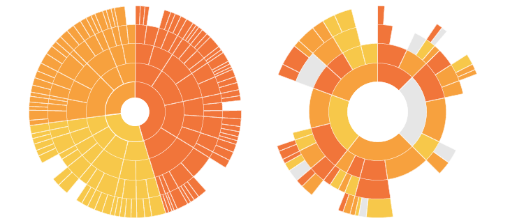
(Source: (“Sunburst Diagram,” n.d.))
5.4.2.3 Dendrogram
A dendrogram is a diagram that shows the hierarchical relationship between objects. It is most commonly created as an output from hierarchical clustering. The main use of a dendrogram is to work out the best way to allocate objects to clusters. The key to interpreting a dendrogram is to focus on the height at which any two objects are joined together. (Source: [@ dendrogram])
(Source: (“Examples of Dendrograms Visualization,” n.d.))
5.4.3 Multidimensional Visualizations
Multidimensional data have multiple dimensions, which implies that there are always at least two variables at play. Often, multidimensional data makes for the most eye-catching visuals because of the many coinciding layers and datasets.
When it comes to multidimensional visual data, the most common varieties are:
5.4.3.1 Histograms
Histogram is a common variation of column charts used to present distribution and relationships of a single variable over a set of categories. A good example of a histogram would be a distribution of grades on a school exam or the sizes of pumpkins, divided by size group, in a pumpkin festival. (Source: (Jānis Gulbis 2016b))
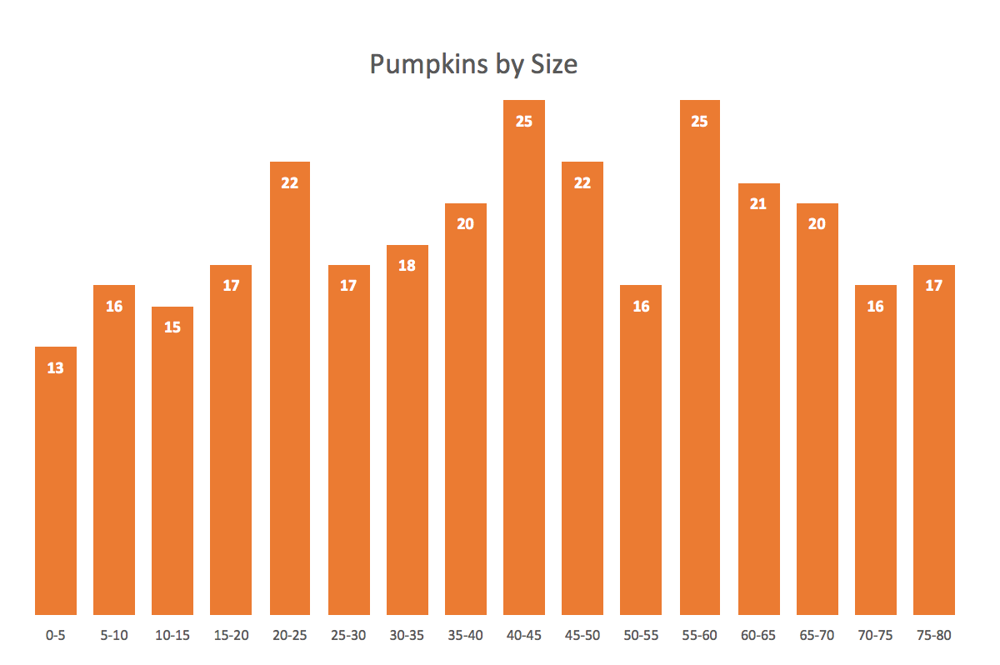
Just like column charts, bar charts can be used to present histograms.
A good histogram example is a population distribution by the age (and sex).
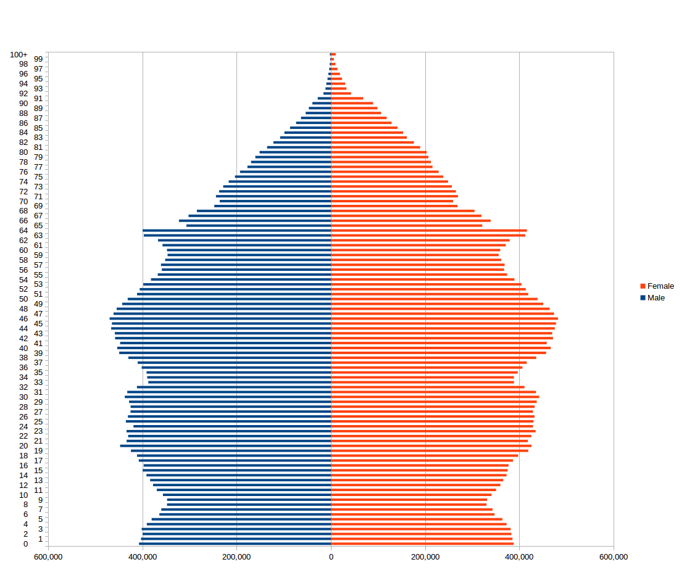
5.4.3.2 Pie Charts
A pie chart typically represents numbers in percentages, used to visualize a part to whole relationship or a composition. Pie charts are not meant to compare individual sections to each other or to represent exact values.
When possible, avoid pie charts and donuts. The human mind thinks linearly but, when it comes to angles and areas, most of us can’t judge them well. (Source: (Jānis Gulbis 2016b))
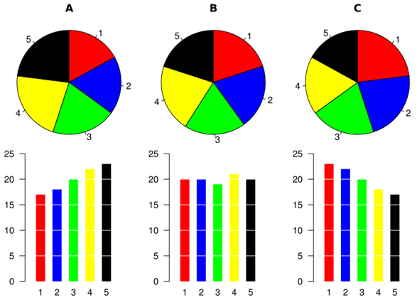
5.4.3.3 Scatter Plots
Scatter charts are primarily used for correlation and distribution analysis. Good for showing the relationship between two different variables where one correlates to another (or doesn’t).
Scatter charts can also show the data distribution or clustering trends and help you spot anomalies or outliers.
A good example of scatter charts would be a chart showing marketing spending vs. revenue. (Source: (Jānis Gulbis 2016b))
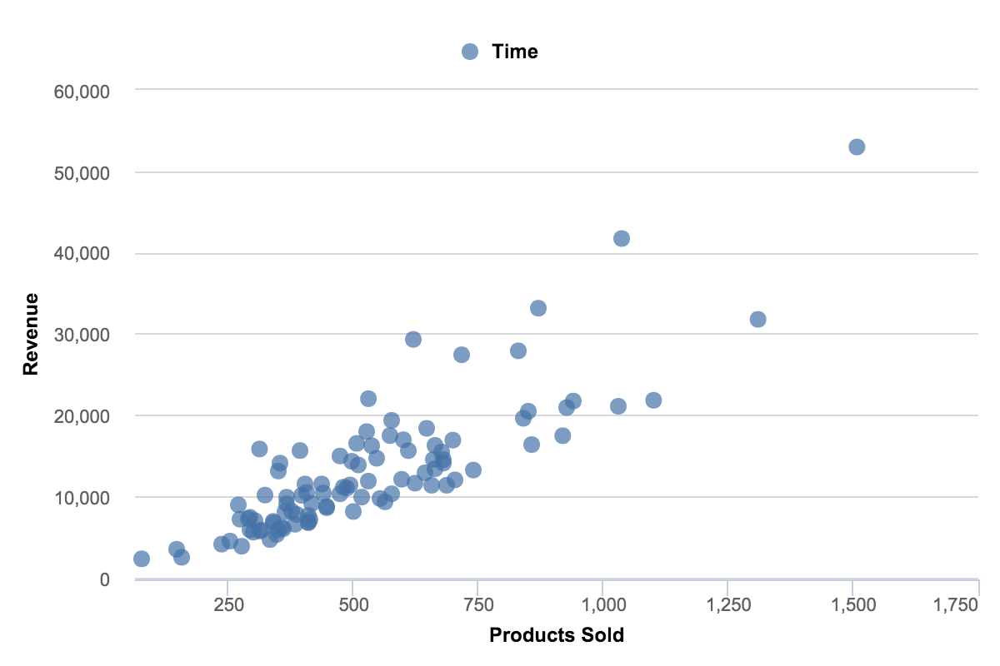
5.4.3.4 Pie Charts: Oportunities and Obstacles
(Quach 2016)
Using a pie chart is usually considered as a bad idea when it comes to data visualization. However, many agree there is still often relevance to using them
1. Comparison to bar charts Some information may be difficult to distinguish in a pie chart; however, if the data is presented with bar charts, differences in the data presented may be more obvious.

(Source: (Hickey 2013))

(Source: (Hickey 2013))
Simple pie charts may not be worthwhile in this situation, but others they may be:
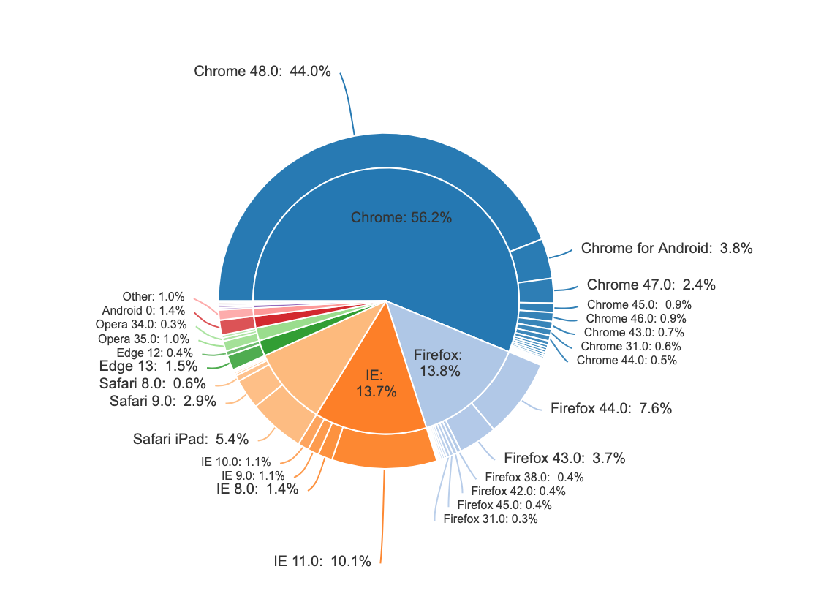
(Source: (Bock 2017))
Slicing up data that is already compared to others is a beautiful way to visualize. The method to make pie charts similar to the above is shared by the article writer: (Source: (Bock 2019))
2. Distinguishing Categories
It is difficult to compare the slices of a circle to figure out the distinctions in size between each pie slice, especially when there are many categories.

(Source: (Hickey 2013))
The above graph is a case specific to when the labels need to be in a legend to the side of the pie, rather than inside or just outside connected by a line. In these scenarios, the typical method to distinguish is to have the slices ordered by size. When cascaded in order of volume, it is less difficut to match the chart and legend.
3. Pie Chart Manipulation
A pie chart is easily manipulated (e.g. using a 3D pie chart).

(Source: (Hickey 2013))
This is a possible method to convey a point the data does not represent, however adding a 3-D effect to any visualization might qualify as deceptive and is not specific to pie charts.
4. Simple Pie Charts A pie chart may be useful when comparing two different categories with different amounts of information. Specifically, it does a better job to distinguish two parts with a 25:75 split or one that is not 50:50 as people are sensitive to a right angle or a dividing line that is not straight. However, this could be done more simply by showing two numbers!

(Source: (Henry 2017))

(Source: (Henry 2017))
Comparing the need for pie charts to having numbers displayed defeats the purpose of data visualization. The above numbers are very simple, however the graphs created are very poor, created to make a point. Pie charts should have more color and are meant to make simple numbers into a visual that captures the audiance more effectively:
(Source: (Henna 2015))
5.4.4 Networks
Network Visualisation (also called Network Graph) is often used to visualise complex relationships between a huge amount of elements. A network visualisation displays undirected and directed graph structures. This type of visualization illuminates relationships between entities. Entities are displayed as round nodes and lines show the relationships between them. The vivid display of network nodes can highlight non-trivial data discrepancies that may be otherwise be overlooked. Some of the common types of network graphs are (Source: [@]):
5.4.4.1 Alluvial Diagrams
Alluvial diagrams are a type of flow diagram originally developed to represent changes in network structure over time. In allusion to both their visual appearance and their emphasis on flow, alluvial diagrams are named after alluvial fans that are naturally formed by the soil deposited from streaming water.
Variables are assigned to vertical axes that are parallel. Values are represented with blocks on each axis. The height of a block represents the size of the cluster and the height of a stream field represents the size of the components contained in both blocks connected by the stream field.
Alluvial diagram is a variant of the Parallel Sets but for categorical variables and often to display trends over time and phases. (Source: (“Alluvial Diagram,” n.d.))
(Source: (“Alluvial Diagram,” n.d.))
5.4.4.2 Node-Link Diagrams
This type of visualisation shows how things are interconnected through the use of nodes / vertices and link lines to represent their connections and help illuminate the type of relationships between a group of entities.
Typically, nodes are drawn as little dots or circles, but icons can also be used. Links are usually displayed as simple lines connected between the nodes. However, in some Network Diagrams, not all of the nodes and links are created equally: additional variables can be visualised, for example, by making the node size or link stroke weight proportion to an assigned value. (Source: (“Node-Link Diagram,” n.d.))
(Source: (“Node-Link Diagram,” n.d.))
5.4.4.3 Word Cloud
A Word Cloud or Tag Cloud is a visual representation of text data in the form of tags, which are typically single words whose importance is visualized by way of their size and color. It displays how frequently words appear in a given body of text, by making the size of each word proportional to its frequency.(McKee 2014)
(Source:(Unknown 2019))
Word clouds can add clarity to text analysis in order to effectively communicate your data results.
| Pros of Word Clouds | Cons of Word Clouds |
|---|---|
| Impactful and easy to understand | Possibly erroneous emphasis based on length of the words |
| Quick to generate and easily shared | Words with letters that contain many ascenders and descenders may receive more attention |
| More visually engaging than a data table | Not very accurate |
| Reveals essential information | Requires a lot of data cleaning |
| Delightful and promote emotional connection | Context is lost |
Ways to generate a word cloud
R: (analysis 2018)
Creating word clouds is very simple in R with the text mining package (TM) and the word cloud generator package. The major steps involved are: text mining which involves text cleaning and transformation, building term-document matrix and generating word cloud.
Python: (Vu 2018) For generating word cloud in Python, modules needed are – matplotlib, pandas and wordcloud. By using a mask, you can generate wordclouds in arbitrary shapes. You can color a word-cloud by using an image-based coloring strategy implemented in ImageColorGenerator. It uses the average color of the region occupied by the word in a source image. You can combine this with masking - pure-white will be interpreted as ‘don’t occupy’ by the WordCloud object when passed as mask. If you want white as a legal color, you can just pass a different image to “mask”, but make sure the image shapes line up. You can also use the recolor method and custom coloring functions.
Wordle: (Feinberg 2014) Wordle is a toy for generating “word clouds” from the text that you provide. It is free and easy to use. You do need Java through Chrome. In Wordle, you generate word clouds from text you give as input. Clouds can be tweaked with different color schemes, layouts, and fonts. Images created from this tool can be saved and reused (Feinberg 2014).
Other popular tools include ABCya, Tagul, Tag Crowd and CloudArt.
5.4.5 Geospatial Visualizations
Use Maps Only When Effective
Maps are a popular choice when it comes to displaying geographical data; they are more exciting and engaging than a simple bar or line chart but still easy to comprehend. Maps are attention-grabbing, so at the first glance they seem like a great option (Bradshaw 2015).
However, just because the data can be represented on a map does not mean that it should be. When used properly, a map can be an excellent choice for illustrating a story. However, if geographic information is not relevant to convey the desired message, then visualizing your data using a map is actually counterproductive. As with any visual, maps are not a universal solution simply because they are eye-catching.
One good use of a map is to show points or specific locations. This use of a map can show how points are distributed and reveal patterns, for example, certain areas having more high-end restaurants. This is not the right approach if the geographic information does not tell a story. If the story is more about comparing data such as median salary, a map is not the most effective. Caution should also be exercised with map visualizations if there are too many points and the data blurs together, causing the data to lose its meaning.
Encoding the data is another potential area for confusion. The most popular methods are using color, shape, and size. Again, each of these can be effective when done properly, but many people misuse them. Using too many colors can make the chart harder to interpret. If necessary, data can be grouped into categories such as good and bad or high, medium and low. Shapes should be easily distinguished, so there shouldn’t be too many unique ones. Also, if the use of shapes does not significantly add to the story, it is probably best to remove them. The size of a marker is a clear way to describe amounts but can easily become a problem if there are outliers. Locations with large values could obscure other data points. The best practice is to use just one of these methods rather than combining two or more.
Use of maps can be tricky. Geographical data doesn’t imply that a map is the best choice to represent it. Maps can be useful for application where proximity matters, but for straight “what is higher” type comparisons, they’re not very effective since large regions will draw more attention than smaller regions due to more concentrated color.
- Mapping the Incredible Spread of Million Dollar Homes Across San Francisco
The below map tracks the spread of million-dollar and above homes throughout the Bay Area, showing neighborhoods in which homes in the seven figures account for exactly 100% of residences. The map is easy to understand and the trend in the housing prices is very clear visually. (Capps 2016)
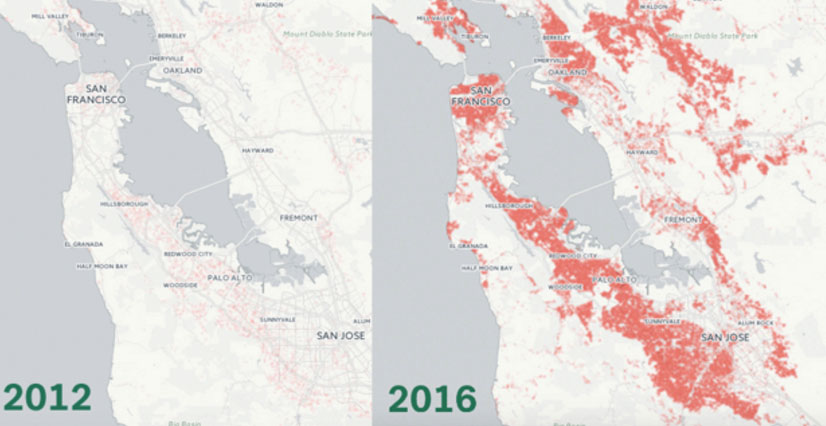
- X-Rays of the Ocean
This world map shows the estimated human impact on the planet’s oceans. The greener the area, the more impact humans have had on factors such as fishing and climate change. According to the visual, more than 40% of our oceans have been negatively impacted by our species. The contrast between the colors is clear and visually appealing. (Data 2017)
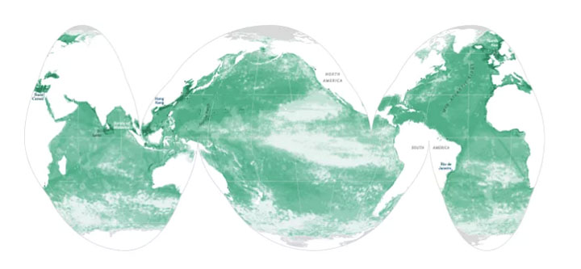
5.4.6 Tips and illustrations of good and bad maps:
This section will help us in understanding how to create effective maps. 1. The example mentioned below gives a clear illustration of how important maps are when used appropriately.
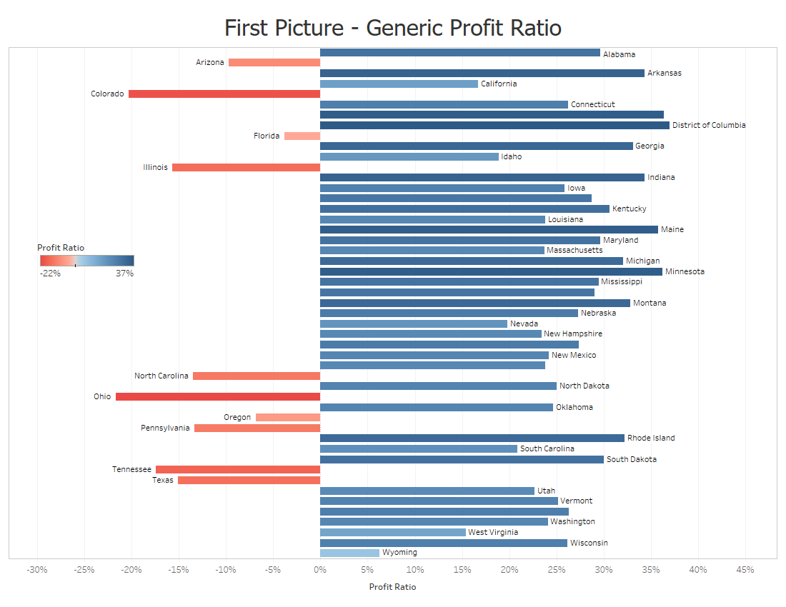
The above graph doesn’t do a good job at illustrating about the profit ratio for each state.
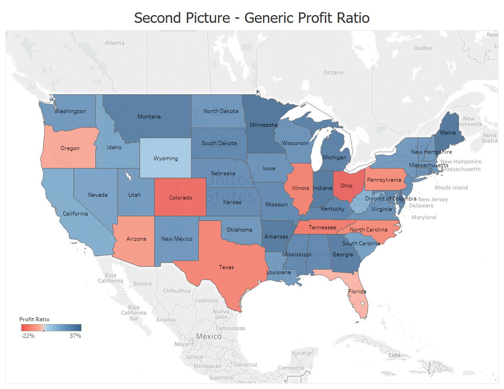
But this map does such a better job and the audience understands right away about the condition of each state.(Temple 2018)
- The next example illustrates that maps should not be overcomplicated.
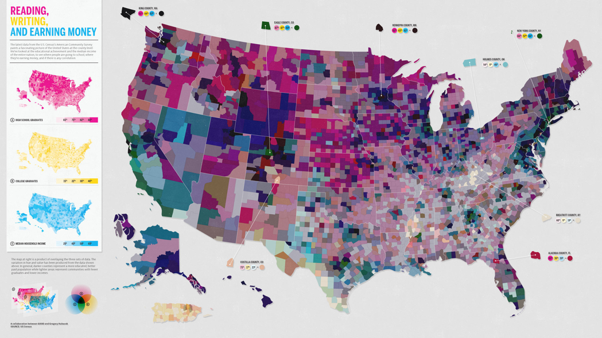
We can see that there are too many things going on and the combination of the colors of reading,writing and earning money is making it even worse. Hence less is more when it comes to maps. Adding to the above points, it is important to keep maps to the point. Think about how the audience might interpret it, and think of any possible errors and confusions your map might create.(Haley 2018)
- A final example to really get you thinking.
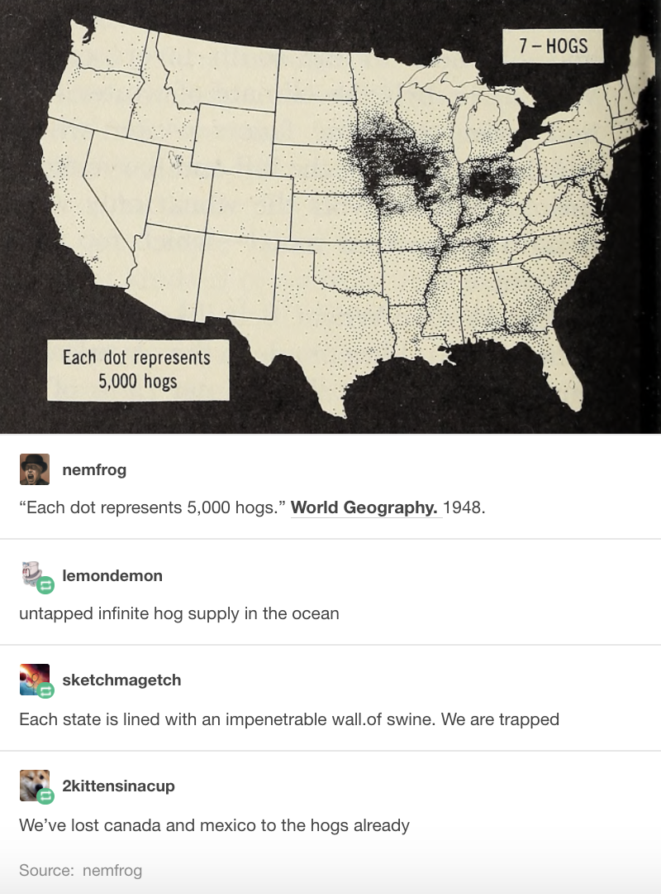
Here each dot represents 5000 hogs. And the dots are black in color. But the background is also black, hence the audience were confused by this. Even though the information provided was clear, the use of the same color ruined the whole point of the visual.(Haley 2018)
** Different Map Techniques **
(“Carto: Popular Map Types,” n.d.)
Maps can be designed using different techniques and thematic representations that have different applications depending on the type of information presented. Listed below are the map visualization techniques that are most commonly used.
(“Techniques to Visualize Geospatial Data,” n.d.) 1. ** Cloropleth Maps ** Maps that use different colors or shading patterns are called cloropleth maps. Each color or shade represents a different value or even range of values in the data. They provide a way to visualise values over a geographical area, which can show variation or patterns across the displayed location.
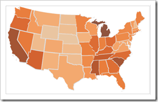
- ** Heat Maps ** Heat maps use color to represent intensity of an incident’s occurence in the dataset. It is commonly used while tracking weather and natural phenomena when conventional map boundries are not very useful while understanding impact areas.

- ** Dot Map ** Dot maps essentially use dots to indicate presence of a variable. They are also called dot distribution map or dot density map. Dot maps are essentially scatterplots on a map and are useful for showing spatial patterns.
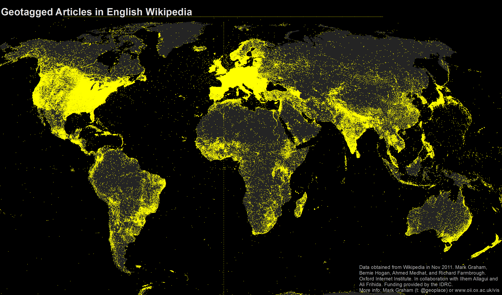
4 ** Proportional Symbol Maps ** In these maps, a symbol is used to represent the data at that specific or aggregate point, and then scaled by value, so that a larger symbol represents a greater value. The size of each symbol can be proportional to the value being visualized.
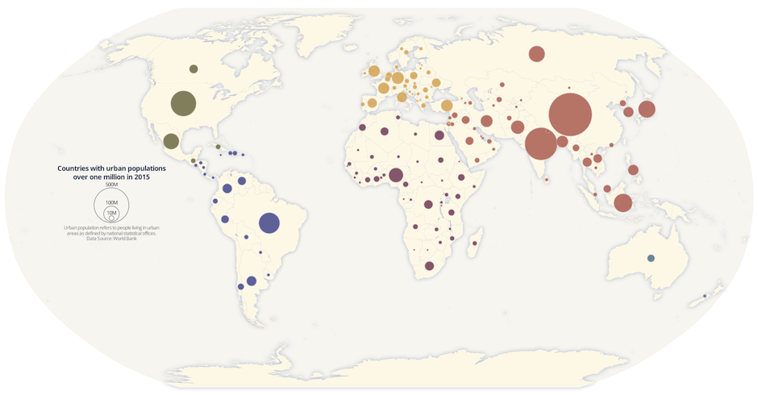
5.5 Choosing the Right Baseline in Data Visualization
(Yau 2013)
The baseline is very important to data visualization. If the baseline is different, the appearance of the data may change drastically. Here is a case study to show the importance of baseline:
# Create the data.
a <-rep(c(2010,2011,2012,2013,2014,2015),each = 4)
b <- seq(1:24)
c <- c(64.9,65.33,71.67,79.17,68.78,69.83,78.61,92.68,89.28,90.43,97.96,106.96,100.66,107.53,117.06,119.21,110.05,97.42,93.62,97.99,80,88.74,102.06,83)
data <- as.data.frame(cbind(a,b,c))
colnames(data) <-c("year","quater","sales")1. Regular quarterly sales. We see sales decreased a lot around 2014. The baseline here is historical sales.
# Regular time series for sales
par(cex.axis=0.7)
data.ts <- ts(data$sales, start=c(2010, 1), frequency=4)
plot(data.ts, xlab="years", ylab="sales", main="sales per quater", las=1, bty="n")
2. Quarterly and yearly change sales. The baseline here is zero and look at the percentage changes.
# Quaterly change
curr <- as.numeric(data$sales[-1])
prev <- as.numeric(data$sales[1:(length(data$sales)-1)])
quaChange <- 100 * round( (curr-prev) / prev, 2 )
barCols <- sapply(quaChange,
function(x) {
if (x < 0) {
return("#8E1600")
} else {
return("#2cbd25")
}
})
barplot(quaChange, border=NA, space=0, las=1, col=barCols, main="% sales change, quaterly")
# Year-over-year change
curr <- as.numeric(data$sales[-(1:4)])
prev <- as.numeric(data$sales[1:(length(data$sales)-4)])
annChange <- 100 * round( (curr-prev) / prev, 2 )
barCols <- sapply(annChange,
function(x) {
if (x < 0) {
return("#8E1600")
} else {
return("#2cbd25")
}
})
barplot(annChange, border=NA, space=0, las=1, col=barCols, main="% sales change, annual")
From this plot, it is very clear that the magnitude drops in sales for some quarters.
3. The sales difference compare to now. The baseline here is the current sales.
# Relative to current 2015
curr <- as.numeric(data$sales[length(data$sales)])
salesDiff <- as.numeric(data$sales) - curr
barCols.diff <- sapply(salesDiff,
function(x) {
if (x < 0) {
return("#8E1600")
} else {
return("#2cbd25")
}
}
)
barplot(salesDiff, border=NA, space=0, las=1, col=barCols.diff, main="Sales difference from last quater 2015")
4. Sales difference compared to the first quarter. The baseline here is the first quater sales.
# Relative to first quater
ori <- as.numeric(data$sales[1])
salesDiff <- as.numeric(data$sales) - ori
barCols.diff <- sapply(salesDiff,
function(x) {
if (x < 0) {
return("#8E1600")
} else {
return("#2cbd25")
}
}
)
barplot(salesDiff, border=NA, space=0, las=1, col=barCols.diff, main="Sales difference from first quater 2010")
5. The difference between quarter sales and mean. ** The baseline is mean now.**
# difference from the mean
mean <- mean(as.numeric(data$sales))
salesDiff <- as.numeric(data$sales) - mean
barCols.diff <- sapply(salesDiff,
function(x) {
if (x < 0) {
return("gray")
} else {
return("black")
}
}
)
barplot(salesDiff, border=NA, space=0, las=1, col=barCols.diff, main="Sales difference from mean")
So before we start to plot, we should decide the baseline we want to use. Different baselines will lead to totally different graphs.
5.6 Using Design Patterns to Find Greater Meaning in Your Data
(Julie Rodriguez 2016)
Visualizations that show comparisons, connections, and conclusions offer analytical clarity.
Patterns based on function can help you see differences and similarities more clearly, understand relationships and behaviors more intimately, and predict future results with a greater level of certainty. When these patterns are presented as visualizations, they help you - 1) see comparisons, 2) make connections, and 3) draw conclusions from your data sets. The major functions can be described with the following examples:
5.6.1 Comparisons

As shown in Figure 1, the bar chart with sparkline enables you to review the data at two different levels: a high-level assessment of the short-term three-month returns is represented with the bar chart, while the sparkline (the line chart below the bar) provides the details of the historical returns. Quickly and concisely, the sparkline shows you the path that has led up to the most recent returns. You can then assess that a narrow path provides consistent returns across the years while a wide path provides varied returns. Side-by-side comparisons of funds organized into two columns—% Returns and % Ahead of Benchmark—enables peer comparisons and fund-specific benchmark comparisons. Hence, you can see that not only has Global Large-Cap Core provided positive returns, it has also provided the best and most consistent returns when compared to the benchmark.
5.6.2 Connections

The string of charts in Figure 2 shows 10-year to year-to-date (YTD) performance returns, which can be interpreted as individual charts or a group of category charts.
Similar to sounds waves, the symmetrical area charts grow equidistant from the source (the zero line) at each time interval to accentuate the returns even further. Here, the y-axis is shown in percentage. Instead of using the zero line to indicate positive or negative returns, it uses color to denote if the category returns are positive (black) or negative (red). For example, Multi-Cap Russell 3000 Growth produced 20% positive returns within the one-year time period and is shown with color fill in both directions from the zero line to purposefully duplicate the large gains and specifically uses black color fill to indicate the returns are positive. As evident from the name, the symmetrical chart doubles the returns to emphasize the amount of color fill.
What else can we derive from organizing the information in a spectrum of negative to positive returns? Based on this organization, three groups of categories have resulted in straight losses (red), heavy gains (black), or a mix of gains and losses across a decade of returns. The string of charts makes it easier to see these three groups of categories to assess their distribution. Just like sound waves, each chart is a sound bite that streams the returns for each category with a “scream” announcing a huge gain (e.g., Multi-Cap Russel 3000 Growth) or loss (e.g., Mid-Cap Russel Mid Cap Growth). In some cases (e.g., Large Cap S&P 500), the chart quietly announces mixed returns to adequately demand less attention.
Next, we might wonder how we would have fared if we had invested in certain funds. We might ask: if we had purchased this fund five years ago, what would the return be? And what about the YTD returns? Since market timing is key to investment choices, the following presentation of hypothetical investments represents a range of results.
5.6.3 Conclusions

In Figure 3, varied performance results become clear with a layered approach to show five potential entry points (10-year, 5-year, 3-year, 1-year, YTD) into an investment. For example, the International Large Cap Core fund provided 27% YTD returns, which contrast the negative returns you would have received had you invested in the fund 1, 5, or 10 years ago. Here, conclusions are derived based on known inputs with a divided review of positive or negative outcomes (shown on the y-axis).
The line weights help to identify each entry point and show the range of differences between the entry points. Accordingly so, resulting returns are shown with simplified curves that connect the inputs and outputs. In this case, the chart has been customized to show an instance in which the user has opted to see the YTD return values as percentages listed to the right of each resulting output.
5.7 Takeaways From Recreating One Chart Using 24 Tools
(Rost 2016)
Lisa Rost’s article “What I learned recreating one chart using 24 tools” describes lessons learned from recreating one chart using many different data visualization tools. The author used apps Excel, Plotly, Easycharts, Google Sheets, Lyra, Highcharts, Tableau, Polestar, Quadrigram, Illustrator, RAW, and NodeBox, as well as charting libraries ggvis, Bokeh, Highcharts, ggplot2, Processing, NVD3, Seaborn, Vega, D3, matplotlib, Vega-Lite, and R. She links her GitHub page on the project which details the data set she used, containing the health expectancy in years as well as GDP per capita and population for about 200 countries in the year 2015, as well as her process and results of visualizing the data using each tool. However, in the article, she focuses on the main takeaways from the exercise, which was especially interesting in the context of our class discussion on different types of tools and their respective strengths. She also provides her own graphics to help illustrate her lessons learned.
5.7.1 Takeaway 1: There is No Perfect Tool, Just Good Tools for People with Certain Goals and Mindsets
Since data visualization is used in a wide variety of fields, from science to journalism, data visualization projects will often have differing objectives, as the people working on them will have different requirements. As the author aptly points out, it is impossible for one tool to satisfy the need of every data visualizer. Each tool has its own pros and cons and it is up to the author to decide which is better suited to meet his/her’s specific situation. Hence, when deciding on a tool or tools to use, one should always consider the purpose of the visualization. For example, consider if the visualization is to show exploratory data analysis or to be presented as a finding to the general public or a specific audience.

(Source:(Rost 2016))
The author also notes that the flexibility of a tool is a sticking point as well if you need to change your data while developing a data visualization, as certain apps like Illustrator will not be ideal because changing the data even slightly requires you to build the graph again from scratch. Another thing to think about is the type of chart you are trying to create. Is a basic bar or line graph sufficient (in which case something like Excel will do the trick), or does your project require a more innovative or custom chart (using D3.js)? While interactivity is a plus point, relevancy of the visualization is more important.

(Source:(Rost 2016))
And finally, people have different preferences and opinions;from the people who build the tools to the users, everyone thinks differently. Therefore, certain tools will be inherently more intuitive to use for different people.
5.7.2 Takeaway 2: We Still Live in an ‘Apps Are for the Easy Stuff, Code Is for the Good Stuff in the World’
Basically, writing code can be scary for anyone without a coding background, but it provides more flexibility, and, as mentioned in class, the code is perfectly reproducible. On the other hand, apps are much more user-friendly for the less computer science-savvy.

(Source:(Rost 2016))
5.7.3 Takeaway 3: Every Tool Forces You Down a Path
Rost quotes her former NPR Visuals teammate for the final lesson header, pointing out that tools themselves influence the development of a data visualization with their respective features, strengths, and limitations.

(Source:(Rost 2016))
5.8 Using Visualization Softwares and Libraries
5.8.1 How to Customize a Legend in Python with Matplotlib
(Jake 2016) A legend shows descriptive labels and their respective colors or shapes for each plotted data series. A good legend helps us to better understand the graph and what each series represents.
5.8.1.1 Add a Basic Legend
First, we need to import the matplotlib library in Python. Then we use the legend() function to add a basic legend. For example, if we already have a line graph with multiple lines, we can add a legend to distinguish them from each other with the ax.legend() function, as shown below:
import matplotlib.pyplot as plt
plt.style.use('classic')
#matplotlib inline
import numpy as np
x = np.linspace(0, 10, 1000)
fig, ax = plt.subplots()
ax.plot(x, np.sin(x), '-b', label='Sine')
ax.plot(x, np.cos(x), '--r', label='Cosine')
ax.axis('equal')
leg = ax.legend();
5.8.1.2 Add a Legend on Different Position
To specify the position of the legend, the ‘loc’ parameter inside the function can be used:
ax.legend(loc='upper left', frameon=False)
fig
5.8.1.3 Customize a Box Surrounding the Legend
We can also specify whether we want a box surrounding the legend with the ‘fancybox’ parameter:
ax.legend(fancybox=True, framealpha=1, shadow=True, borderpad=1)
fig
5.8.1.4 Legend for Size of Points
import pandas as pd
cities = pd.read_csv('data/california_cities.csv')
# Extract the data we're interested in
lat, lon = cities['latd'], cities['longd']
population, area = cities['population_total'], cities['area_total_km2']
# Scatter the points, using size and color but no label
plt.scatter(lon, lat, label=None,
c=np.log10(population), cmap='viridis',
s=area, linewidth=0, alpha=0.5)
plt.axis(aspect='equal')
plt.xlabel('longitude')
plt.ylabel('latitude')
plt.colorbar(label='log$_{10}$(population)')
plt.clim(3, 7)
# Here we create a legend:
# we'll plot empty lists with the desired size and label
for area in [100, 300, 500]:
plt.scatter([], [], c='k', alpha=0.3, s=area,
label=str(area) + ' km$^2$')
plt.legend(scatterpoints=1, frameon=False, labelspacing=1, title='City Area')
plt.title('California Cities: Area and Population');
5.8.1.5 Multiple Legends
fig, ax = plt.subplots()
lines = []
styles = ['-', '--', '-.', ':']
x = np.linspace(0, 10, 1000)
for i in range(4):
lines += ax.plot(x, np.sin(x - i * np.pi / 2),
styles[i], color='black')
ax.axis('equal')
# specify the lines and labels of the first legend
ax.legend(lines[:2], ['line A', 'line B'],
loc='upper right', frameon=False)
# Create the second legend and add the artist manually.
from matplotlib.legend import Legend
leg = Legend(ax, lines[2:], ['line C', 'line D'],
loc='lower right', frameon=False)
ax.add_artist(leg);
5.8.1.6 ggplot2 code template for data viz in R
(Kabacoff, n.d.)
This site includes full sets of R code to generate specific types of graphs in ggplot2. Plots in ggplot2 are created by using “layering”. Layering combines a base plot with other aspects such as aesthetics, titles, and labels using additional code. For those who favor Python for data visualization, this layering approach in R is actually quite similar to the syntax in Python’s matplotlib library, in which set_style and specifying the axes labels and title are done separately from the code that generates the plot itself.
To provide an example of the “layering” mentioned above, here is a generic snippet of code for creating a scatterplot with ggplot2 and the mtcars data set in R base, using this website’s code as a template:
library(ggplot2)
theme_set(theme_bw()) #set background theme
plot1 <- ggplot(mtcars, aes(x = hp, y = mpg)) + geom_point(aes(col=factor(vs), size = 2)) + geom_smooth(method = "loess", se = F) + xlim(c(0, 400)) + ylim(c(0, 40)) + labs(title = "Horsepower vs. MPG", y = "Miles Per Gallon", x = "Horsepower")
plot(plot1) #we have to actually call the plot() function on the plot object we created
The ggplot2 package allows R users to go beyond the simple and often rudimentary-looking graphs in R and offers many ways of customizing data visualizations. The layering technique also makes it easier to remember the code to generate these plots, since geom functions for the layers remain constant and they are all included in a single line of code.
5.8.1.7 Reusable Calendar View Code
(Bostock 2018a)
We have all seen the calendar views in the various data products that we worked on. Below is an open source code which will help you replicate and create your own calendar:

Reproducible code for reference: This example demonstrates loading of CSV data, which is then quantized into a diverging color scale. The values are visualized as colored cells per day. Days are arranged into columns by week, then grouped by month and years.
<!DOCTYPE html>
<body>
<script src="https://d3js.org/d3.v4.min.js"></script>
<script>
var width = 960,
height = 136,
cellSize = 17;
var formatPercent = d3.format(".1%");
var color = d3.scaleQuantize()
.domain([-0.05, 0.05])
.range(["#a50026", "#d73027", "#f46d43", "#fdae61", "#fee08b", "#ffffbf", "#d9ef8b", "#a6d96a", "#66bd63", "#1a9850", "#006837"]);
var svg = d3.select("body")
.selectAll("svg")
.data(d3.range(1990, 2011))
.enter().append("svg")
.attr("width", width)
.attr("height", height)
.append("g")
.attr("transform", "translate(" + ((width - cellSize * 53) / 2) + "," + (height - cellSize * 7 - 1) + ")");
svg.append("text")
.attr("transform", "translate(-6," + cellSize * 3.5 + ")rotate(-90)")
.attr("font-family", "sans-serif")
.attr("font-size", 10)
.attr("text-anchor", "middle")
.text(function(d) { return d; });
var rect = svg.append("g")
.attr("fill", "none")
.attr("stroke", "#ccc")
.selectAll("rect")
.data(function(d) { return d3.timeDays(new Date(d, 0, 1), new Date(d + 1, 0, 1)); })
.enter().append("rect")
.attr("width", cellSize)
.attr("height", cellSize)
.attr("x", function(d) { return d3.timeWeek.count(d3.timeYear(d), d) * cellSize; })
.attr("y", function(d) { return d.getDay() * cellSize; })
.datum(d3.timeFormat("%Y-%m-%d"));
svg.append("g")
.attr("fill", "none")
.attr("stroke", "#000")
.selectAll("path")
.data(function(d) { return d3.timeMonths(new Date(d, 0, 1), new Date(d + 1, 0, 1)); })
.enter().append("path")
.attr("d", pathMonth);
d3.csv("dji.csv", function(error, csv) {
if (error) throw error;
var data = d3.nest()
.key(function(d) { return d.Date; })
.rollup(function(d) { return (d[0].Close - d[0].Open) / d[0].Open; })
.object(csv);
rect.filter(function(d) { return d in data; })
.attr("fill", function(d) { return color(data[d]); })
.append("title")
.text(function(d) { return d + ": " + formatPercent(data[d]); });
});
function pathMonth(t0) {
var t1 = new Date(t0.getFullYear(), t0.getMonth() + 1, 0),
d0 = t0.getDay(), w0 = d3.timeWeek.count(d3.timeYear(t0), t0),
d1 = t1.getDay(), w1 = d3.timeWeek.count(d3.timeYear(t1), t1);
return "M" + (w0 + 1) * cellSize + "," + d0 * cellSize
+ "H" + w0 * cellSize + "V" + 7 * cellSize
+ "H" + w1 * cellSize + "V" + (d1 + 1) * cellSize
+ "H" + (w1 + 1) * cellSize + "V" + 0
+ "H" + (w0 + 1) * cellSize + "Z";
}
</script>5.8.2 Creating a Diverging Bar Chart
(Prabhakaran, n.d.)
A diverging bar chart shows and compares positive and negative values for a particular variable. One popular use case is survey analysis, in which multiple options are given as the categories, so each option has one bar, and there are two opposite ends of the spectrum for the values. These two sides are usually ‘positive’ vs ‘negative’, but they can also be categorical values such as ‘agree’ or ‘disagree’.
Below is the R code template one can use to create a diverging bar chart.
library(ggplot2)
theme_set(theme_bw())
# Data Prep
data("mtcars") # load data
mtcars$`car name` <- rownames(mtcars) # create new column for car names
mtcars$mpg_z <- round((mtcars$mpg - mean(mtcars$mpg))/sd(mtcars$mpg), 2) # compute normalized mpg
mtcars$mpg_type <- ifelse(mtcars$mpg_z < 0, "below", "above") # above / below avg flag
mtcars <- mtcars[order(mtcars$mpg_z), ] # sort
mtcars$`car name` <- factor(mtcars$`car name`, levels = mtcars$`car name`) # convert to factor to retain sorted order in plot.
# Diverging Barcharts
ggplot(mtcars, aes(x=`car name`, y=mpg_z, label=mpg_z)) +
geom_bar(stat='identity', aes(fill=mpg_type), width=.5) +
scale_fill_manual(name="Mileage",
labels = c("Above Average", "Below Average"),
values = c("above"="#00ba38", "below"="#f8766d")) +
labs(subtitle="Normalised mileage from 'mtcars'",
title= "Diverging Bars") +
coord_flip()
Diverging bar charts are also convenient to create in Tableau. Below is an example using survey response data.

References
Arribas-Gil, Ana, and Juan Romo. 2014. “Shape outlier detection and visualization for functional data: the outliergram.” Biostatistics 15 (4): 603–19. https://doi.org/10.1093/biostatistics/kxu006.
Gervini, Daniel. 2012. “OUTLIER DETECTION AND TRIMMED ESTIMATION FOR GENERAL FUNCTIONAL DATA.” Statistica Sinica 22: 1639–60. https://doi.org/1doi:http://dx.doi.org/10.5705/ss.2010.282.
French, Katy. 2017. “25 Tips to Instantly Improve Your Data Visualization Design.” https://www.columnfivemedia.com/25-tips-to-upgrade-your-data-visualization-design.
Steier, David, William D Eggers, Joe Leinbach, and Anesa Diaz-Uda. 2012. “10 Tips for Data Visualization.” http://www.govtech.com/pcio/10-Tips-for-Data-Visualization.html.
Evergreen, Stephanie;Metzner, Chris. 2013. “Design Principles for Data Visualization in Evaluation.” Academic Journal.
Jager, Tom. 2019. “How to Optimize Charts For Color Blind Readers Using Color Blind Friendly Palettes.” https://venngage.com/blog/color-blind-friendly-palette/.
Lupi, Giorgia. 2015. “The Architecture of a Data Visualization - multilayered Storytelling through "Info-spatial" Compositions.” https://medium.com/accurat-studio/the-architecture-of-a-data-visualization-470b807799b4.
Infogram. n.d. “How to Choose the Right Chart for Your Data.” https://infogram.com/page/choose-the-right-chart-data-visualization.
Gulbis, Jānis. 2016a. “Data Visualization – How to Pick the Right Chart Type?”
Datalabs. n.d. “The Most Common Type of Data Visualisations & Examples.” https://www.datalabsagency.com/2014/12/22/15-most-common-types-of-data-visualisation/.
Ayalasomayajula, Vasavi. n.d. “Visualizing Time Series Data: 7 Types of Temporal Visualizations.” Socialcops. https://blog.socialcops.com/academy/resources/visualizing-time-series-data.
“Avoiding Common Mistakes with Time Series.” 2015. Data Science Web Page. https://www.svds.com/avoiding-common-mistakes-with-time-series/.
Shneiderman, Ben. n.d. “How to Show Hierarchical Data with Information Visualization.” https://www.interaction-design.org/literature/article/how-to-show-hierarchical-data-with-information-visualization.
“Data Visualization: Visualization Types.” n.d. https://guides.library.duke.edu/datavis/vis_types.
“Sunburst Diagram.” n.d. https://datavizcatalogue.com/methods/sunburst_diagram.html.
“Examples of Dendrograms Visualization.” n.d. https://www.datanovia.com/en/lessons/examples-of-dendrograms-visualization/.
Gulbis, Jānis. 2016b. “Data Visualization – How to Pick the Right Chart Type?” https://eazybi.com/blog/data_visualization_and_chart_types/.
Quach, Alex. 2016. “Why pie charts often suck: And how we did better.” https://medium.com/the-mission/to-pie-charts-3b1f57bcb34a.
Hickey, Walter. 2013. “The Worst Chart in the World.” http://www.businessinsider.com/pie-charts-are-the-worst-2013-6.
Bock, Tim. 2017. “Why Pie Charts Are Better Than Bar Charts.” https://www.displayr.com/why-pie-charts-are-better-than-bar-charts/.
Bock, Tim. 2019. “Create Pie Charts for Free.” https://www.displayr.com/create-pie-charts-for-free/.
Henry, Kristin. 2017. “In Defense of Pie Charts, and Why You Shouldn’t Use Them.” https://medium.com/@KristinHenry/in-defense-of-pie-charts-and-why-you-shouldnt-use-them-df2e8ccb5f76.
Henna. 2015. “50 Percent Henna Chai Deposit.” https://i0.wp.com/hennablogspot.com/wp-content/uploads/2015/01/50-percent-Henna-Chai-deposit.jpg?w=600.
{kind=link}
“Alluvial Diagram.” n.d. https://datavizproject.com/data-type/alluvial-diagram/.
“Alluvial Diagram.” n.d. http://lgimages.s3.amazonaws.com/data/imagemanager/62927/journal.pone.0008694.g003.png.
{kind=link}
“Node-Link Diagram.” n.d. https://datavizcatalogue.com/methods/network_diagram.html.
“Node-Link Diagram.” n.d. http://lgimages.s3.amazonaws.com/data/imagemanager/62927/force-protovis.png.
{kind=link}
McKee, Sandy. 2014. “Presenting Qualitative Survey Data with Word Clouds.” https://www.surveygizmo.com/resources/blog/qualitative-data-word-cloud/.
Unknown. 2019. “Rotating Text in Word Cloud.” https://i.stack.imgur.com/UJ0r5.jpg.
{kind=link}
analysis, Statistical tools for high-throughput data. 2018. “Text mining and word cloud fundamentals in R : 5 simple steps you should know.” http://www.sthda.com/english/wiki/text-mining-and-word-cloud-fundamentals-in-r-5-simple-steps-you-should-know/.
Vu, Duong. 2018. “Generating WordClouds in Python.” https://www.datacamp.com/community/tutorials/wordcloud-python.
Feinberg, Jonathan. 2014. “Wordle.” http://www.wordle.net/.
Bradshaw, Paul. 2015. “When to Use Maps in Data Visualisation: A Great Big Guide.” https://onlinejournalismblog.com/2015/08/24/when-to-use-maps-in-data-visualisation-a-great-big-guide/.
Capps, Kriston. 2016. “Mapping the Incredible Spread of Million-Dollar Homes Across San Francisco.” https://www.citylab.com/equity/2016/05/the-rise-of-million-dollar-homes-in-san-francisco-and-the-bay-area/483485/?utm_source=SFTwitter.
Data, Flowing. 2017. “X-Ray of the Oceans.” https://flowingdata.com/2017/05/08/x-ray-of-the-oceans/.
Temple, Shelby. 2018. “Ways to Improve a Map Visualization.” https://towardsdatascience.com/ways-to-improve-a-map-visualization-ba3dc083b3cb.
Haley, Jason. 2018. “Bad Maps, What You Gonna Do.” https://blog.stratasan.com/bad-maps-bad-maps.
“Carto: Popular Map Types.” n.d. https://carto.com/blog/popular-thematic-map-types-techniques-spatial-data/.
“Techniques to Visualize Geospatial Data.” n.d. https://blog.socialcops.com/academy/resources/7-techniques-to-visualize-geospatial-data/.
Yau, Nathan. 2013. “The Baseline and Working with Time Series in R.” https://flowingdata.com/2013/11/26/the-baseline/.
Julie Rodriguez, Piotr Kaczmarek. 2016. “Using design patterns to find greater meaning in your data.” https://www.oreilly.com/ideas/using-design-patterns-to-find-greater-meaning-in-your-data.
Rost, Lisa Charlotte. 2016. “What I Learned Recreating One Chart Using 24 Tools.” https://source.opennews.org/articles/what-i-learned-recreating-one-chart-using-24-tools/.
Jake, VanderPlas. 2016. “Python Data Science Handbook.” https://jakevdp.github.io/PythonDataScienceHandbook/04.06-customizing-legends.html.
Kabacoff, R. n.d. “Ggplot2.” https://www.statmethods.net/advgraphs/ggplot2.html.
Bostock, Mike. 2018a. “Calendar View.” Blog. Mike Bostock’s Block 4063318. https://bl.ocks.org/mbostock/4063318.
Bostock, Mike. 2018b. “CalendarView.” Image. Mike Bostock’s Block 4063318. https://bl.ocks.org/mbostock/raw/4063318/.
Prabhakaran, Selva. n.d. “Top 50 Ggplot2 Visualizations - the Master List (with Full R Code).” http://r-statistics.co/Top50-Ggplot2-Visualizations-MasterList-R-Code.html#Diverging%20Bars.